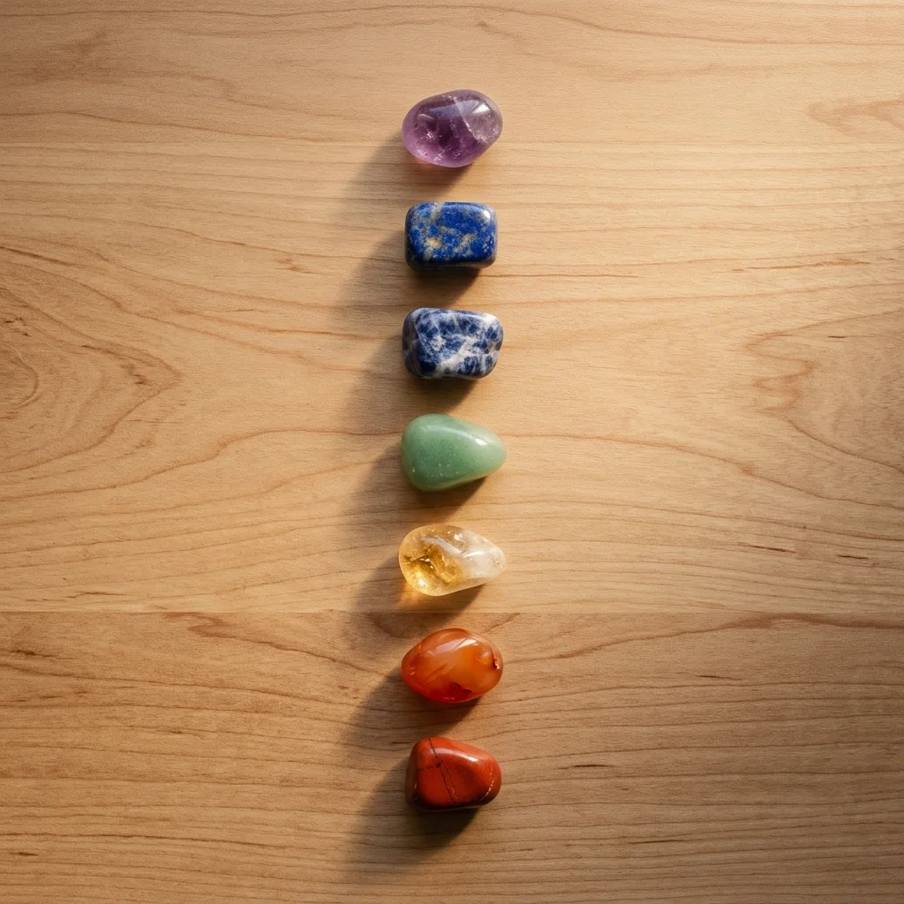
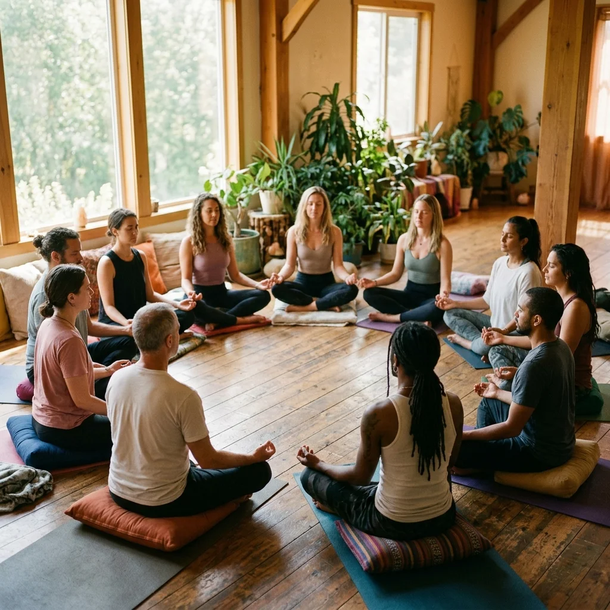

Tienes éxito, estás bendecido… y aun así hay un vacío que no puedes nombrar.
No estás solo. Y hay una razón para eso.
Acceso gratuito para miembros fundadores · Sin tarjeta de crédito
Has trabajado duro, tienes familia, quizás fe… pero de vez en cuando te preguntas: "¿Es esto todo?" Esa pregunta no es debilidad. Es tu alma despertando.
Millones de personas en Latinoamérica sienten exactamente lo mismo. Crecieron con una religión que no termina de conectar, o simplemente buscan algo más profundo que rituales vacíos.
Te sientes desconectado, aunque tengas todo
Buscas propósito y respuestas que nadie te da
La religión heredada ya no te llena
Quieres sanar pero no sabes por dónde empezar
Fui ateo durante 8 años. No por rebeldía, sino porque no encontraba respuestas reales. En el Santuario aprendí que la espiritualidad no necesita de edificios ni de miedo. Hoy vivo con una claridad que nunca imaginé posible.
Crecí en una familia muy religiosa. Tenía culpa hasta de dudar. El Santuario me enseñó a desaprender para reconectar de verdad. Hoy soy la versión más auténtica de mí misma.
Una comunidad privada en Skool para personas de habla hispana que buscan reconectar con su esencia: alma, energía y consciencia — sin dogmas, sin juicios.
Contenido único diseñado para la comunidad hispana: Chakras, Arcángeles, Maestros Ascendidos y Rayos de Luz.
Un ambiente vibrante y seguro donde cada miembro eleva al otro. Meditaciones, yoga y prácticas de manifestación.
Retos mensuales con resultados reales: Manifestación, Hábitos, Gratitud e Introspección profunda.
Módulos educativos sobre espiritualidad, energía y consciencia diseñados para hispanohablantes.
Conecta con cientos de personas en tu mismo camino. Comparte, aprende y crece juntos.
Acceso al calendario de eventos para sesiones grupales de meditación, Q&A y workshops en vivo.
Manifestación, Hábitos Sagrados, Gratitud e Introspección — retos diseñados para construir tu nueva versión.
Sistema de niveles donde desbloqueas contenido especial. Los más activos ganan libros exclusivos y llamadas 1 a 1.
Aprende "El Arte de Ver a Dios" — un sistema único para conectar con lo divino desde tu propia experiencia.
Tienes entre 25 y 45 años y sientes que hay más para ti en la vida
Buscas propósito, sanación y una conexión espiritual auténtica
Las religiones convencionales no responden tus preguntas más profundas
Quieres crecer junto a una comunidad que te entiende y te eleva
Estás listo para convertirte en la mejor versión de ti mismo
Descubre las señales sutiles que indican que estás listo para un despertar espiritual profundo y transformador.
Leer más →
Todo lo que necesitas saber sobre los 7 chakras principales y cómo equilibrarlos para una vida más plena.
Leer más →
Historias reales de transformación a través de la práctica diaria de meditación dentro del Santuario.
Leer más →
Accede gratis al Santuario de Bienestar y únete a una comunidad que te espera.
Tu alma ya sabe que es el momento.
Sin compromisos · Sin tarjeta de crédito · Acceso inmediato